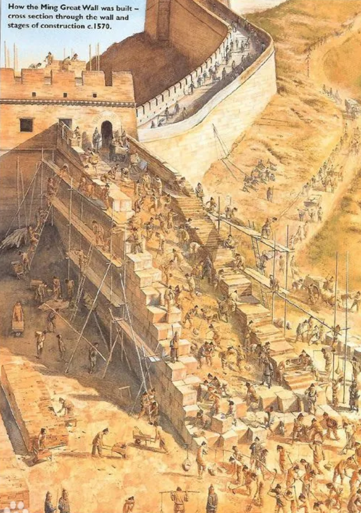

明朝是中国古典建筑艺术的集大成时期，宫殿、城墙、陵墓等大型工程的建设达到巅峰。明代建筑既继承了宋元以来的木构技术，又在规模与装饰上有所创新，形成独特的明式风格。
注：明代建筑以宫殿、城墙与陵墓为主，反映出皇权与国防在建筑活动中的主导地位，同时民间建筑也得到发展。
注：明代建筑以木材、砖石为主，木构技术成熟，砖石在城墙、陵墓中大量应用，彩绘与雕刻工艺精湛。
点击任意卡片查看详细信息
明代皇宫建筑的巅峰之作，布局严谨，装饰华丽，体现了明朝皇权至上的礼制观念与建筑艺术的极致表达。

明代长城是长城体系的最后完善阶段，砖石结构坚固，关隘密布，体现了明朝强大的组织能力和国防意识。
明代帝王陵墓群，布局严谨，石雕精美，体现了明代陵寝制度的完善与丧葬建筑的艺术成就。